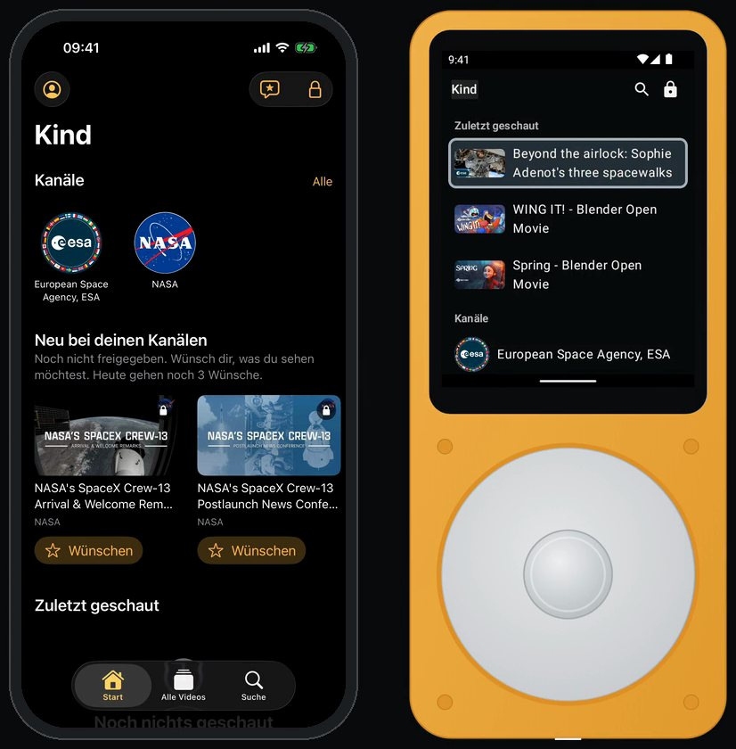
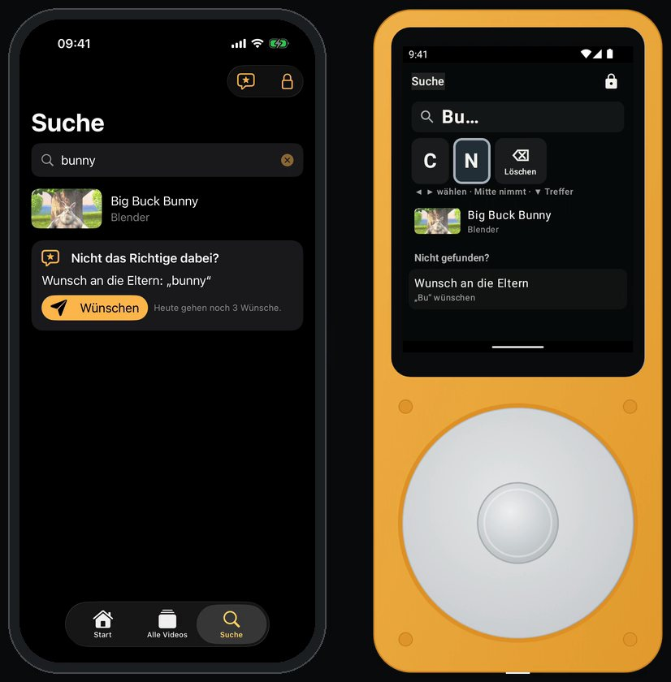
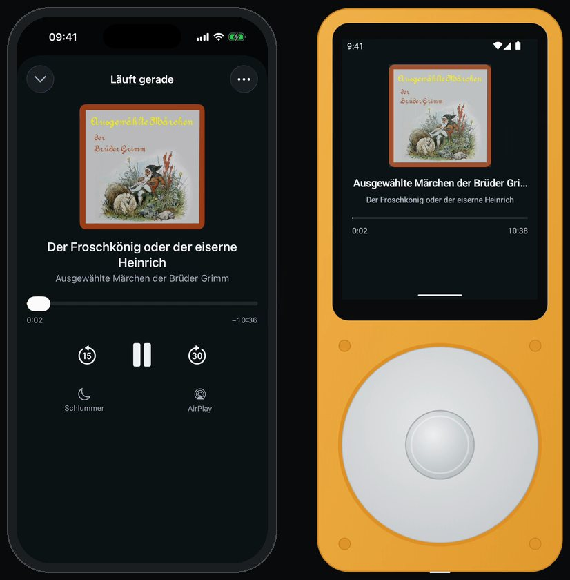

01
Accompany, don't monitor
Parents set the frame. Children get room to make their own decisions.
Gradual autonomyDigital tools for children
SideKids builds apps that give children calm, protected spaces — without attention machines or surveillance, and with a clear path towards digital independence.

The idea
Digital education is not about keeping children away from media – although for children under three, experts advise little to no screen time. It is about an understandable frame in which children explore, choose and gradually take responsibility, with adults who watch and listen along and talk about what they experience.
01
Parents set the frame. Children get room to make their own decisions.
Gradual autonomy02
No feeds, trends or autoplay: the tool waits instead of demanding attention.
The Less Online idea03
Local data, open software and no business model built on child profiles.
Privacy explainedApps

Curated video library
In development
Parents review channels, videos and playlists; children choose freely within that selection.

Audio plays, music, podcasts
Family testing
SidePlay plays what the family already owns or subscribes to – from its own server, even in airplane mode.
Try it
SideTube is being built for iOS and Android, SidePlay for iPhone and SidePhone. Neither app is publicly available yet.
Store and TestFlight links will appear here once the version for families is ready.
Source codeIn family testing on the family's own devices; release in preparation.
Interested in the family test or have questions? Contact via the provider's website.